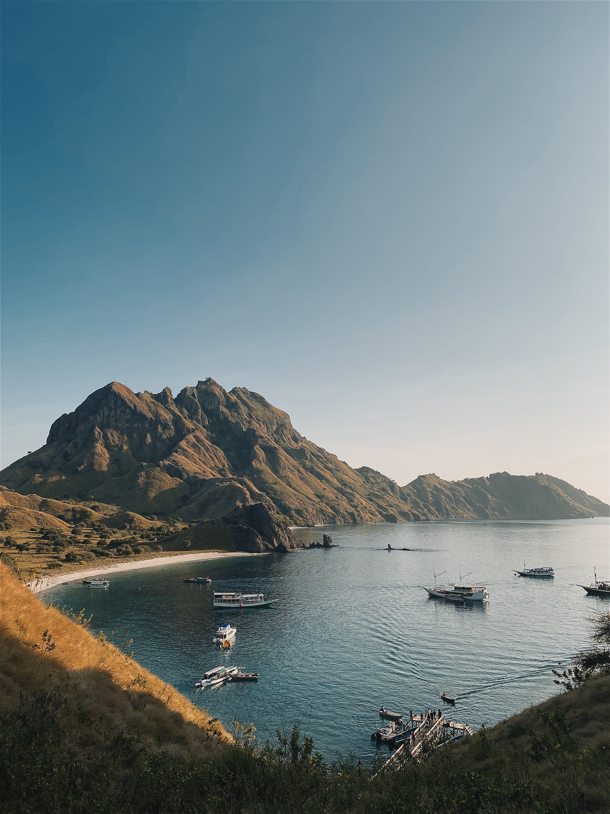

Sepetak Surga
Indonesia Timur
Labuan Bajo merupakan sebuah surga tersembunyi yang ada di Indonesia bagian timur. Desa ini terletak di Kecamatan Komodo, Kabupaten Manggarai Barat, Provinsi Nusa Tenggara Timur yang berbatasan langsung dengan Nusa Tenggara Barat dan dipisahkan oleh Selat Sape. Labuan Bajo adalah salah satu dari lima Destinasi Super Prioritas yang sedang dikembangkan di Indonesia.
Lokasi Wisata Alam Populer

Taman Nasional Komodo
yang terdaftar sebagai Situs Warisan Dunia UNESCO pada tahun 1991 ini terdiri dari Pulau Komodo, Pulau Rinca, Pulau Padar, dan beberapa pulau lain di sekitarnya. Kehadiran komodo (Varanus komodoensis) yang merupakan kadal raksasa di dunia ini pertama kali diliput dalam jurnal ilmiah pada tahun 1912.

Pantai Merah Muda
merupakan salah satu keindahan alam yang tersimpan di Nusa Tenggara Timur (NTT). Warna merah muda pada pasir pantai dipercaya terbentuk karena karang yang terdapat di sana memiliki pigmen merah muda yang dikenal dengan Phoraminipheres.